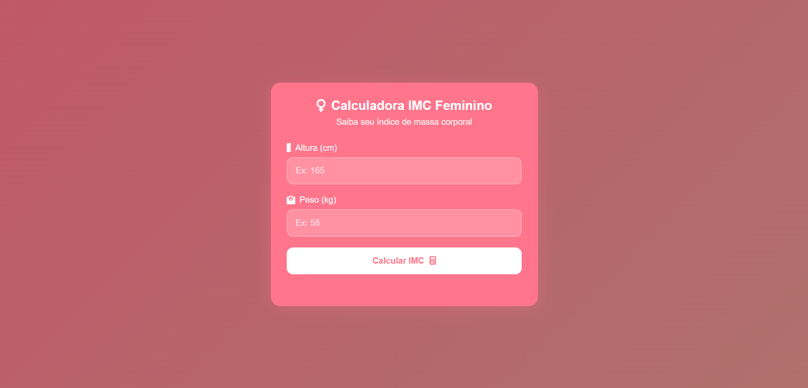

Calculadora IMC Feminino

Calculadora de Índice de Massa Corporal com design feminino
Ver Detalhes"Transformando ideias em realidade através do código"
Me chamo Luana Diniz, tenho 25 anos e moro no Rio de Janeiro. Atualmente curso Análise e Desenvolvimento de Sistemas na Unicesumar, onde mergulho em linguagens de programação, arquitetura de software e boas práticas de desenvolvimento.
Como estagiária em Back-End no Bradesco Seguros, trabalho com:
Sou apaixonada por resolver problemas complexos e acredito que a tecnologia deve ser acessível, eficiente e humana. Nos meus momentos livres, adoro estudar novas linguagens e contribuir para projetos open-source.
Calculadora de Índice de Massa Corporal com design feminino
Ver DetalhesCardápio digital para confeitaria com temas coloridos.
Ver Detalhes